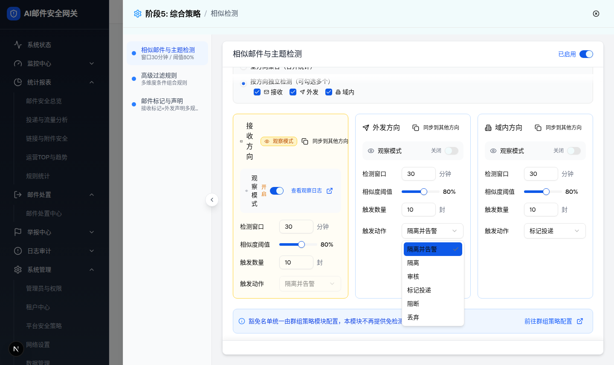
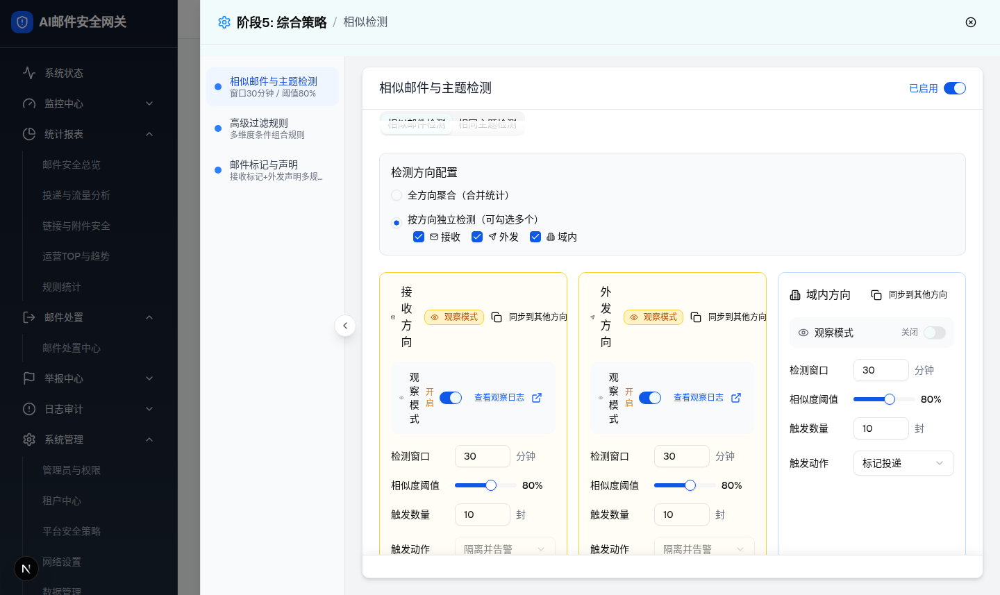
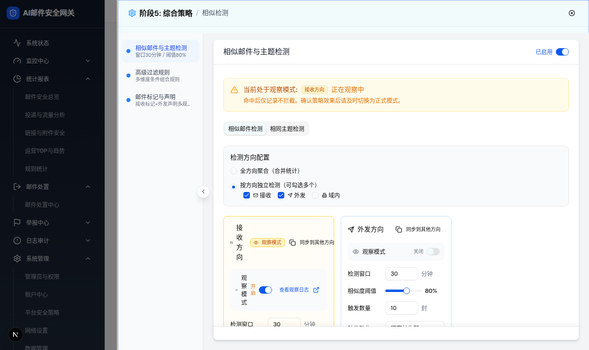
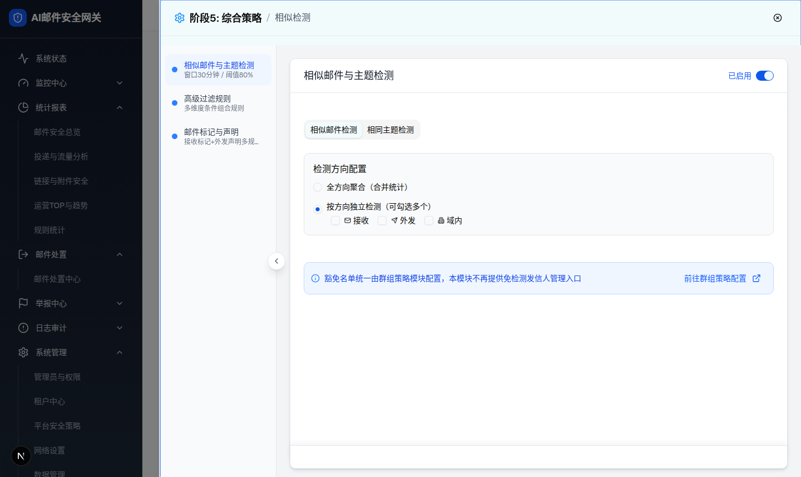
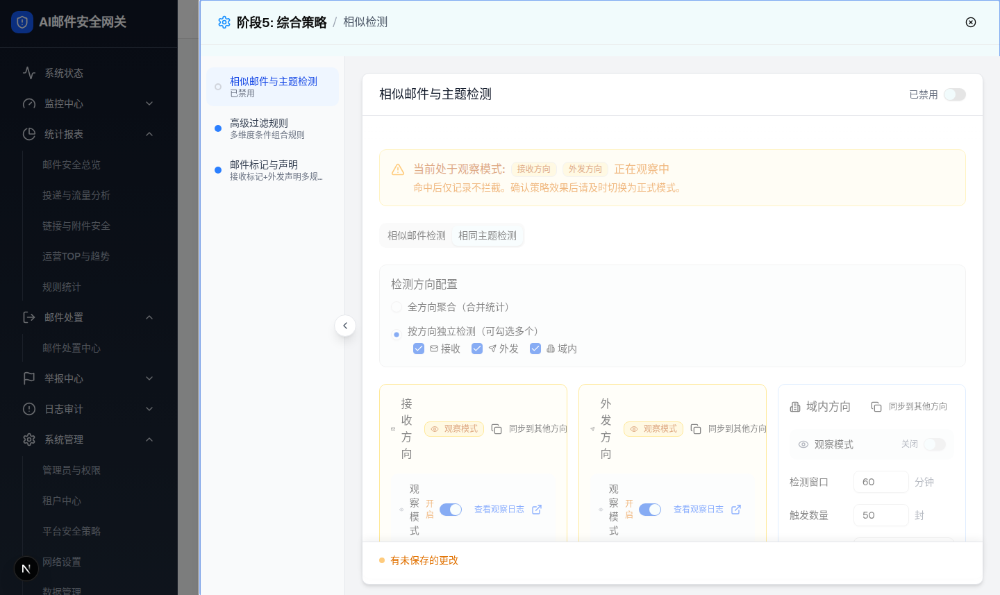

| 所属组件 | 2.3 相似检测模块 SimilarDetectionModule + 2.2 抽屉宿主 |
| 主文件 | index.html |
| 包含状态 | 3A 触发动作下拉展开；3B 观察模式开启联动；3C 方向取消勾选；3D 全部方向取消（空态）；3E 策略禁用态（宿主开关） |
| 浏览器验证 | 五个状态均在 1440×1000 运行态 demo 实际点击触发并截图 + DOM 采集 |

| 选项 value（源码） | 文案 | 统一规则系统映射建议（implement.md） |
|---|---|---|
| quarantine-alert | 隔离并告警 | quarantine + 告警通知联动（Q-2） |
| quarantine | 隔离 | quarantine |
| review | 审核 | 待确认（Q-2，或隔离+人工审核队列标签） |
| mark-delivery | 标记投递 | accept + 添加特定 header（不新增 mark action） |
| block | 阻断 | reject/block |
| discard | 丢弃 | discard |
| 比对项 | demo 实际 DOM | 提取/预览 HTML | 是否一致 |
|---|---|---|---|
| 触发器 | button[role=combobox] 文案“隔离并告警”，w-40 h-8 | .dd-trigger 同文案 160px | 一致 |
| 选项数 | 截图实拍 6 项（隔离并告警/隔离/审核/标记投递/阻断/丢弃） | 6 项 | 一致 |
| 选中态 | 当前项蓝底反白 + 勾选图标 | .dd-opt.selected 蓝底 + ✓ | 一致 |
| 弹层位置 | portal 渲染于触发器正下方，宽与触发器一致 | absolute 下方同宽 | 一致 |
（说明：警告条中“接收方向”徽章来自层级0默认已开启观察的接收卡；本预览开启外发后两枚并列，与实拍一致。）

| 比对项 | demo 实际 DOM | 提取/预览 HTML | 是否一致 |
|---|---|---|---|
| 外发卡样式 | class 含 amber（border-amber-300 bg-amber-50/50），switch data-state=checked | .observe 琥珀样式，aria-checked=true | 一致 |
| Badge / 日志链接 | amber-100 Badge 出现；“查看观察日志”出现 | 联动显示 | 一致 |
| 动作下拉 | combobox disabled=true（data-disabled）文案保持“隔离并告警” | trigger disabled 置灰 | 一致 |
| 警告条徽章 | “接收方向”“外发方向”两枚 | 两枚徽章 | 一致 |
| 关闭还原 | 再次点击 switch 后实测各项全部还原 | 预览切回同还原 | 一致 |


| 比对项 | demo 实际 DOM | 提取/预览 HTML | 是否一致 |
|---|---|---|---|
| 3C 勾选状态 | #dir-intra unchecked，其余 checked | 预览取消域内后同状态 | 一致 |
| 3C 卡片集合 | 仅“接收方向”“外发方向”两卡渲染 | 两张 mini 卡 | 一致 |
| 3D 勾选状态 | 三个 checkbox 全 unchecked | 同 | 一致 |
| 3D 卡片/警告条 | 卡片区空；bg-amber-50 警告条不渲染 | 卡片区空、无警告条 | 一致 |
| 3D 空态提示 | “至少选择一个检测方向”未渲染（dialog innerText 全文检索无此串） | 预览不渲染（说明占位框注明缺失） | 一致（差异 D-2） |

| 比对项 | demo 实际 DOM | 提取/预览 HTML | 是否一致 |
|---|---|---|---|
| 宿主开关 | tabpanel 外唯一 switch data-state=unchecked | aria-checked=false | 一致 |
| 灰化容器 | class 含 opacity-50 与 pointer-events-none 的内容容器出现 | .policy-content.disabled 同效果 | 一致 |
| 状态文案 | “已禁用”出现（dialog innerText） | 同文案 | 一致 |
| 未保存提示 | “有未保存的更改”出现（footerUnsaved=true） | 联动显示 | 一致 |
| 导航摘要 | 首项 innerText 变“相似邮件与主题检测 | 已禁用” | 主文件 2.2 预览同联动（本页说明） | 一致 |